Listed below in the conventional order — National Treasures first, then Important Cultural Properties. Click any thumbnail to visit the castle's official site, or use the buttons to find hotels and tours nearby.
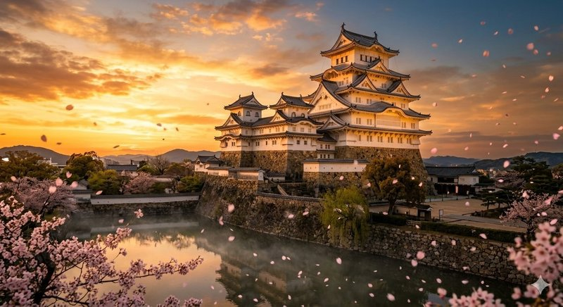
Often called the "White Heron" for its elegant white exterior, Himeji Castle is Japan's largest and most visited castle. Built in 1609 and miraculously surviving WWII bombings, it remains one of the finest examples of feudal Japanese architecture. The complex features 83 buildings with sophisticated defensive systems including hidden passages and arrow slits. UNESCO World Heritage Site since 1993. Best visited in spring when 1,000 cherry trees bloom around the keep.
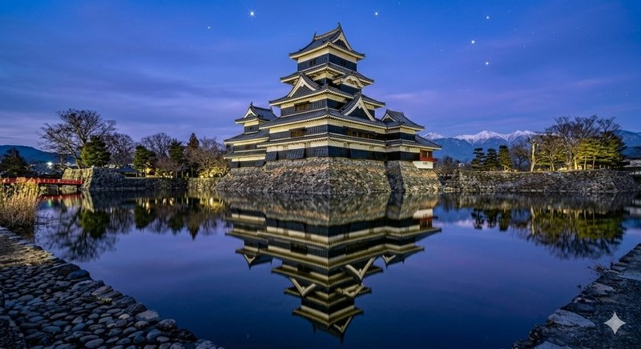
Known as "Crow Castle" for its striking black exterior, Matsumoto Castle is Japan's oldest surviving wooden keep, completed in 1594. Unlike most castles built on hilltops, it sits on a flat plain surrounded by a wide moat that perfectly mirrors the structure. The contrast of black walls against snow-capped Japanese Alps in winter is unforgettable. The interior preserves original wooden floors, steep staircases, and historic firearms displays.
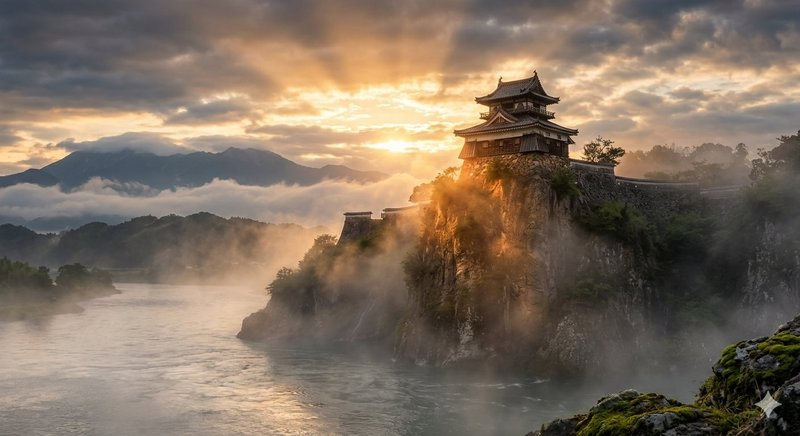
Perched dramatically on a cliff above the Kiso River, Inuyama Castle is Japan's oldest castle keep, dating back to 1537. Smaller than other national treasure castles but no less impressive, it offers panoramic views from the top floor — visitors can step onto the original wooden balcony, a rare experience. Until 2004, it was privately owned by the Naruse family for 12 generations, the only privately-owned castle in Japan.
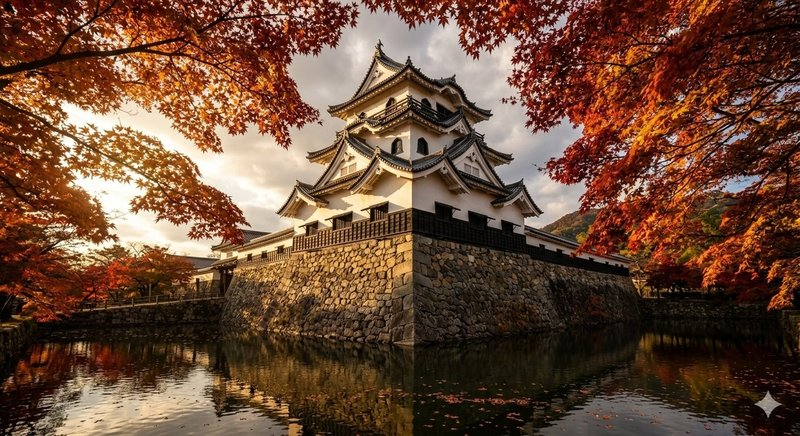
Standing proudly above Lake Biwa, Hikone Castle is one of only twelve original castles and famous for its perfectly preserved condition. Completed in 1622 after 20 years of construction, it features a unique three-story keep with elegant gables and an impressive defensive layout. The surrounding gardens, Genkyu-en, provide stunning seasonal views. Hikone is also home to the famous samurai mascot "Hikonyan."
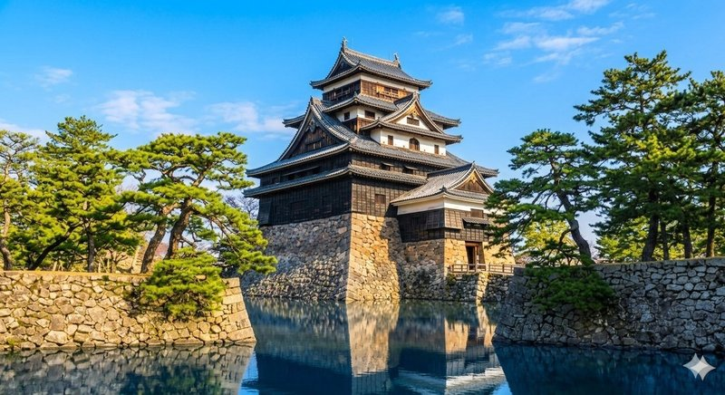
The "Black Castle of San'in" earned National Treasure status in 2015, the most recent castle to receive this honor. Built in 1611 and never attacked, Matsue's dark wooden keep retains its original somber beauty. The five-story tower commands sweeping views of Lake Shinji, especially stunning at sunset. Visitors can explore the historic samurai district and take a moat boat tour around the castle grounds.
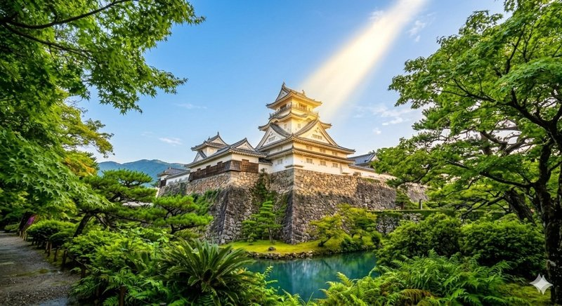
The only castle in Japan where both the keep AND palace buildings remain intact in their original state, Kochi Castle offers an unmatched glimpse into samurai-era life. Built in 1611 by the Yamauchi clan, it survived fires and modernization to preserve its historic palace where lords actually lived. The four-story keep, surrounded by lush forest on Otakasa Hill, is especially beautiful when illuminated at night.
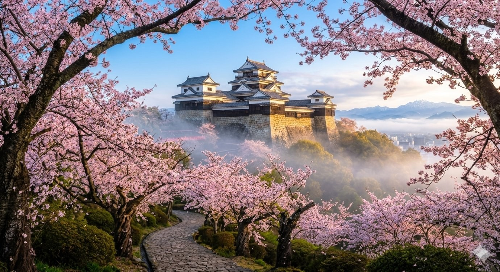
Crowning the summit of Mount Katsuyama, Matsuyama Castle is one of Japan's three great connected-keep castles. Construction began in 1603 and took 25 years. The complex features 21 designated cultural properties, including a unique three-tiered keep connected to several smaller turrets. A scenic ropeway carries visitors to the top, where 360-degree views of Matsuyama city and the Seto Inland Sea await. Spring brings 200 cherry trees in full bloom.
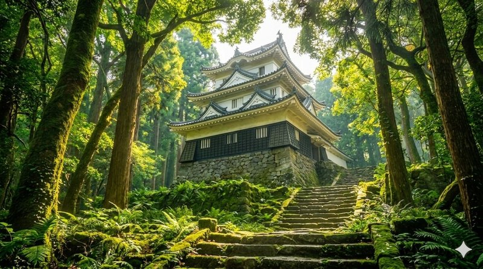
A hidden gem on the western coast of Shikoku, Uwajima Castle is small but architecturally fascinating. Built by the famous warlord Date Hidemune in 1601, its irregular pentagonal layout was a clever defensive innovation that confused attackers. The three-story wooden keep stands surrounded by dense forest on a small mountain in the city center. Less crowded than famous castles, it offers a peaceful, atmospheric experience.
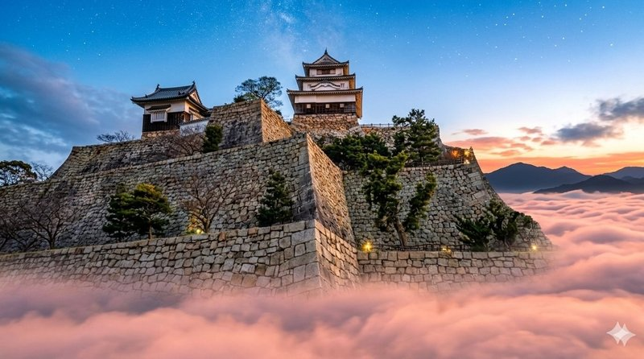
Famous for having Japan's tallest stone walls (over 60 meters), Marugame Castle creates a dramatic optical illusion — the small wooden keep crowns massive multi-tiered stone fortifications. Built in 1597 and reconstructed in 1660, the keep is one of only twelve original survivors. The climb to the top is steep but rewarding, offering views of the Seto Inland Sea and the iconic Seto Ohashi Bridge.
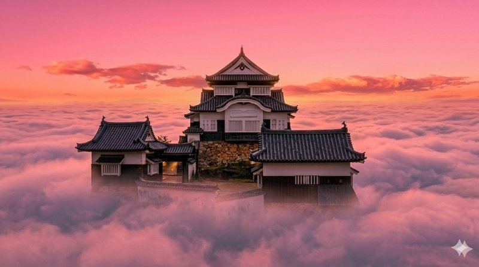
Japan's highest mountain castle at 430 meters elevation, Bitchu Matsuyama earned the nickname "Castle in the Sky" for the magical phenomenon when autumn morning fog creates a sea of clouds, leaving only the keep visible above. Originally built in 1240 and rebuilt in 1683, this small but breathtaking castle requires a 20-minute hike to reach. The fog phenomenon occurs mostly between late September and early April, early morning.
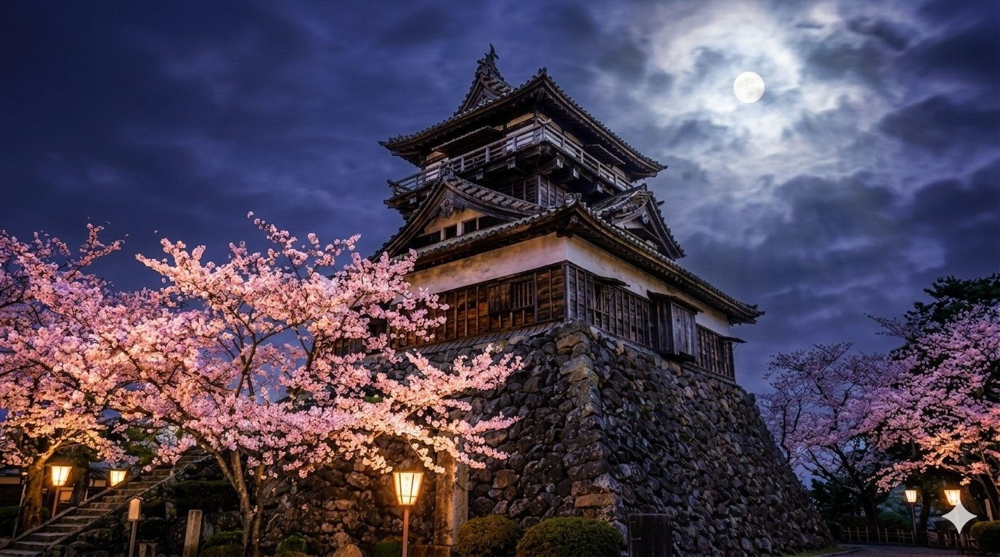
One of Japan's oldest wooden keeps, Maruoka Castle dates back to 1576. Its rustic, unrefined design — with weathered wood, stone-tile roofing, and uneven walls — gives it a uniquely ancient character that polished castles like Himeji lack. Famous for its 400 cherry trees that surround the keep in a sea of pink each spring, it's also nicknamed "Mist Castle" for the fog that historically protected it during sieges.
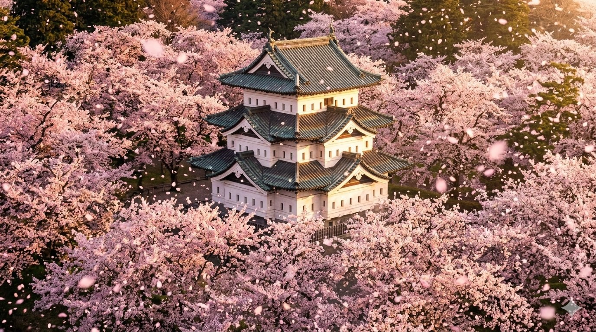
Northern Japan's most beautiful castle, Hirosaki Castle is the centerpiece of one of Japan's top three cherry blossom destinations. The three-story keep, completed in 1611, sits among 2,600 cherry trees that explode into pink each late April — about a month later than Tokyo. The petals falling into the moat create a famous "pink carpet" that draws photographers from around the world. Currently undergoing temporary relocation for stone wall repair work.